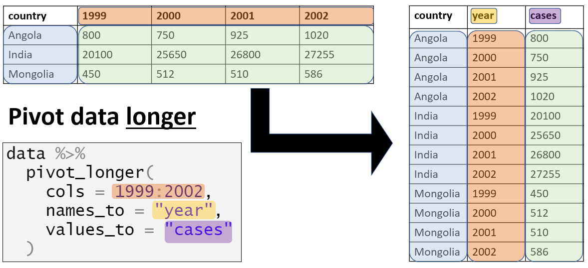
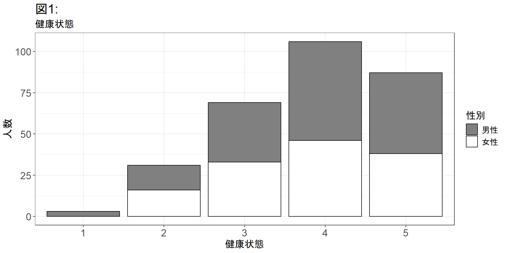
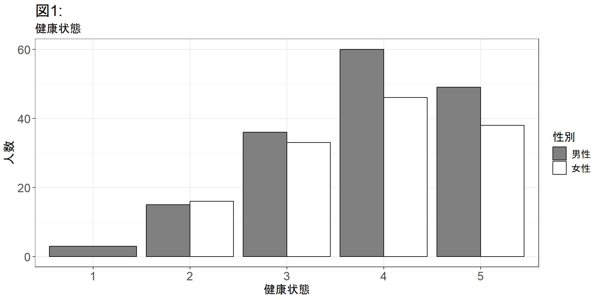
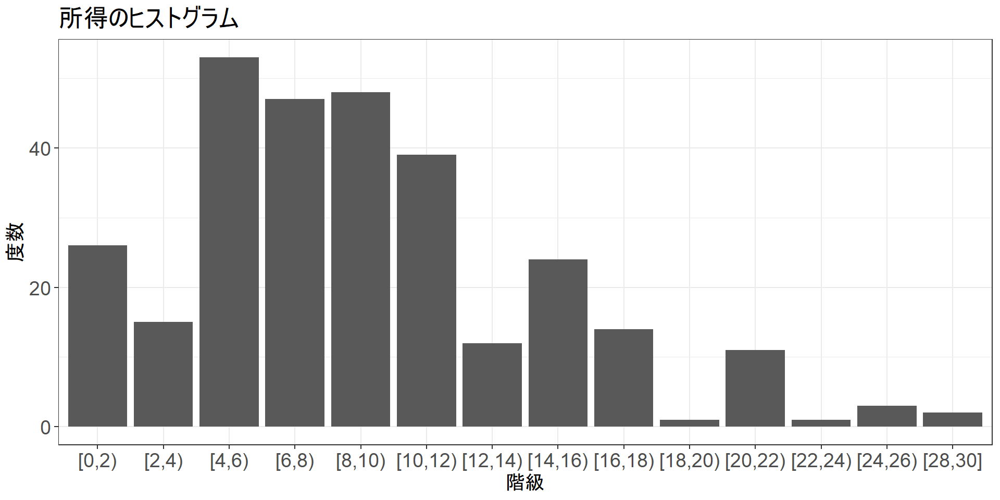
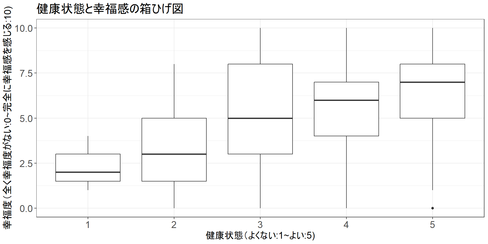
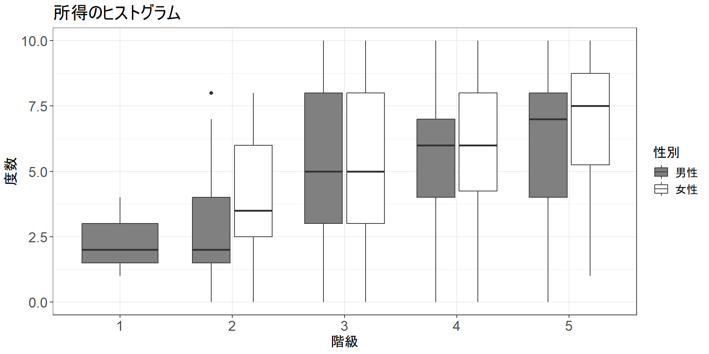
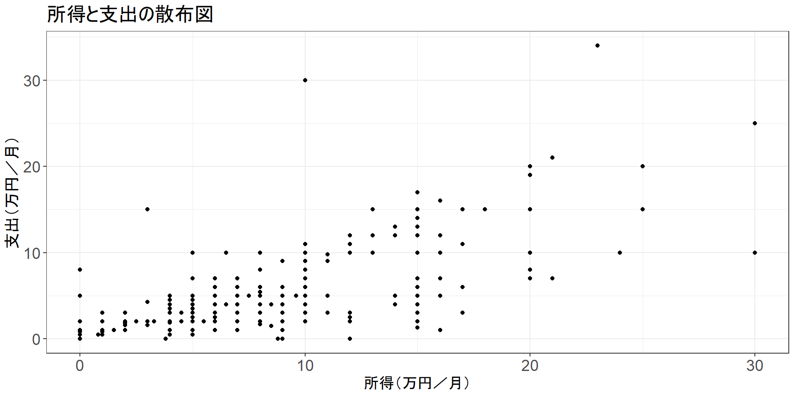
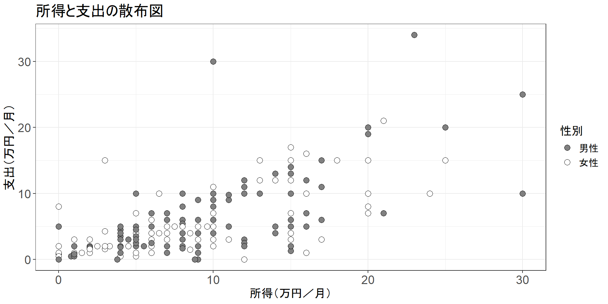
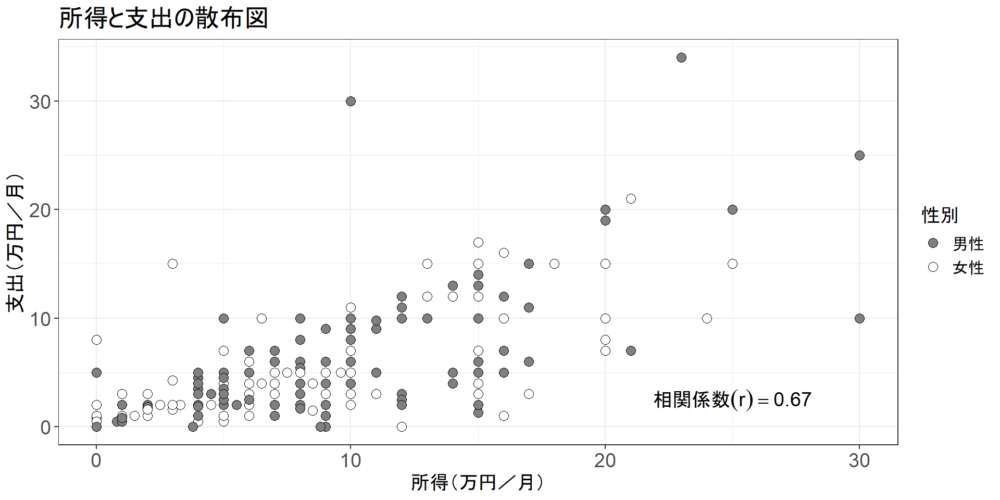

第6回 二変量統計
2026年度 経済データ分析演習B2
伊藤 翼
2026-11-14
はじめに
出席登録は13:00から14:30まででに登録してください
出席番号
165411
- Google Classroomへの登録：https://classroom.google.com/c/NzkxMjEzNjY4MzEz?cjc=gsrnanuj
クラスコード
j4osjaqj
今回の目標
- クロス集計表が作成できる
- ggplot2でグラフが作成できる
- 箱ひげ図、散布図が作成できる
- 相関係数を求められる
講義準備
講義準備
ライブラリの保存フォルダの作成
- Drive→Classroom→2026年度 経済データ分析演習B2に「R_Library」ファルダを作成
- 後にライブラリの読み込み・呼び出しが早くなります
第6回講義フォルダ作成
- Drive→Classroom→2026年度 経済データ分析演習B2に「第6回」フォルダを作成
第5回Colabファイルの再利用
- Driveの「第5回」フォルダ上にある前回課題提出Colabファイルを開く
- 「ファイル」→「移動」→先ほど作成した「第6回」に移動
Driveのマウント
マウント
- マウントとは、ColabからDriveに接続すること
- 方法は二つありますが、
- どちらもランタイムのタイプが「Python 3」であることが必要
- ランタイムのタイプを変更する前にDriveをマウントする
マウントの方法：Python code(1)
- 以下のCodeをコードセルに入力し実行
実行
- 警告が出るので、「Googleドライブに接続」を選択
- Googleへのログインが求められるので「toyo.jp」のアカウントを選択

アクセスの許可
- アカウントへのアクセス許可を求められるので、「許可」をクリック

マウントの方法：Python code(2)
マウントの状況のチェック
- アイコン選択方法と異なり、左側のバーにファイルは表示されません
- 以下のようになっていればOK

ランタイムのタイプの変更
Rへの変更
- 左上の「ランタイム」から「ランタイムのタイプの変更」を選択
- ランタイムのタイプをRに変更
- Driveへのマウントをした後にランタイムのタイプを変更しても、Driveのマウントは切れません

日本語フォントのインストール
- Colabでは日本語フォントがデフォルトで使えないことがあります
- 特に、今後作図で使用するggplot2では文字化けしてしてしまいます
- そこで、日本語フォントを先にインストールします
パッケージのDriveへの保存
- ライブラリの読み込み・呼び出しにはかなり時間がかかる
- それは作業、課題へのハードルになる、
- ライブラリの読み込み・呼び出しを早くするために、パッケージを保存しておく
- 1回目のpacmanによるライブラリの読み込み・呼び出しには10分程度かかります
- その1回で「R_Library」にパッケージが保存されている
- ただし、実はtidyverseは保存されないので、こちらは別で呼び出す
ライブラリの読み込み
- もっと簡単に、一括でパッケージの読み込み・呼び出しができるpacman関数を利用
- 読み込み・呼び出しのどちらもできる
- 複数のパッケージを一括でできる
- ただし、CRANに登録されているパッケージのみ

データ加工・作成の続き
演習問題（データ加工・作成）
- 前回作成したデータ作成コードに、アルバイト関連変数を追加してください。
アルバイトダミー変数：dum_partjob
- アルバイトしている場合を1、していない場合を0とするダミー変数
アルバイト時間変数：con_partjob_time
- アルバイト時間の連続変数を作成
アルバイト収入変数：con_partjob_income
- アルバイト収入の連続変数を作成
- それぞれデータを確認してから作成してください
- 特に連続変数に外れ値がある場合は、欠損値を指定してください
変数ラベルの指定
- 記述統計量などを作成するとオブジェクト名が表示されます
- レポートで使用するときは、読み手に伝わるように修正しないといけません
- 変数ラベルを作成し、それを記述統計量などのオブジェクト名に適用します
- データを作成した下にコードセルを追加して、以下の貼り付けてください
# 作成した変数に対して、レポートでも使用できる日本語（英語でも良い）ラベルを付ける
df_label <- df |>
label_variables(id = "id",
dum_female = "女性ダミー",
dis_age = "年齢",
cat12_birth = "誕生月",
cat5_grade = "学年",
dum_econ = "経済学部ダミー",
dum_exstud = "留学生ダミー",
dis_happy_wk = "最近1週間の幸福度",
dis_happy_yr = "最近1年間の幸福度",
dis_happy_lf = "これまでの幸福度",
cat5_health = "健康状態カテゴリ（昇順）",
con_sleep_wd = "平日の睡眠時間（時間）",
dum_live_single = "一人暮らしダミー",
cat5_commut_time = "通学時間カテゴリ",
cat5_gpa = "GPAカテゴリ（昇順）",
con_income = "所得（万円）",
con_consump = "支出（万円）",
dum_partjob = "アルバイトダミー",
con_partjob_time = "アルバイト時間（時間/週）",
con_partjob_income = "アルバイト収入（万円）")
labels <- variable_label(df_label) # 作成したラベルをlabelsというオブジェクトに代入しておく記述統計量の修正
- 前回gt関数で表にした記述統計量のオブジェクト名をラベル名に変更する
- gt()関数まえに、mutate(variable = labels[variable])として、列名variableにlabelsオブジェクトからラベル名を適用させる
## 最後にgt()とつけるときれいな表を作成してくれます。
## その場合は新たなオブジェクトに代入してください。
## また、tab_header関数で表のタイトル、fmt_number関数で指定した変数のフォーマット（小数点）を設定
stat <- get_summary_stats(df, show = c("n", "mean", "median", "sd", "min", "max")) |>
mutate(variable = labels[variable]) |> # variableをlabelsのラベルに変更する
gt() |>
tab_header(
title = "Table 1", # タイトル
subtitle = md("記述統計量")) |> # サブタイトル
fmt_number(
columns = -c("n"), # c()の前にマイナスをつけることで、n以外の列を小数点第3位とします.
decimals = 3) # 小数点第3位まで| Table 1 | ||||||
| 記述統計量 | ||||||
| variable | n | mean | median | sd | min | max |
|---|---|---|---|---|---|---|
| id | 297 | 149.461 | 149.000 | 86.312 | 1.000 | 298.000 |
| 女性ダミー | 296 | 0.449 | 0.000 | 0.498 | 0.000 | 1.000 |
| 年齢 | 297 | 19.896 | 20.000 | 1.611 | 18.000 | 27.000 |
| 誕生月 | 297 | 6.478 | 7.000 | 3.317 | 1.000 | 12.000 |
| 学年 | 297 | 1.906 | 2.000 | 1.035 | 1.000 | 5.000 |
| 経済学部ダミー | 297 | 0.391 | 0.000 | 0.489 | 0.000 | 1.000 |
| 留学生ダミー | 297 | 0.061 | 0.000 | 0.239 | 0.000 | 1.000 |
| 最近1週間の幸福度 | 297 | 5.529 | 6.000 | 2.774 | 0.000 | 10.000 |
| 最近1年間の幸福度 | 297 | 5.475 | 6.000 | 2.519 | 0.000 | 10.000 |
| これまでの幸福度 | 297 | 6.013 | 6.000 | 2.523 | 0.000 | 10.000 |
| 健康状態カテゴリ（昇順） | 297 | 3.818 | 4.000 | 1.004 | 1.000 | 5.000 |
| 平日の睡眠時間（時間） | 297 | 6.309 | 6.000 | 1.138 | 2.000 | 10.000 |
| 一人暮らしダミー | 297 | 0.259 | 0.000 | 0.439 | 0.000 | 1.000 |
| 通学時間カテゴリ | 297 | 2.441 | 2.000 | 0.995 | 1.000 | 5.000 |
| GPAカテゴリ（昇順） | 297 | 3.845 | 4.000 | 0.764 | 1.000 | 5.000 |
| 所得（万円） | 296 | 8.545 | 8.000 | 5.481 | 0.000 | 30.000 |
| 支出（万円） | 285 | 5.603 | 5.000 | 4.926 | 0.000 | 34.000 |
| アルバイトダミー | 297 | 0.761 | 1.000 | 0.427 | 0.000 | 1.000 |
| アルバイト時間（時間/週） | 296 | 10.777 | 10.000 | 8.903 | 0.000 | 48.000 |
| アルバイト収入（万円） | 226 | 6.910 | 7.000 | 3.399 | 0.000 | 30.000 |
二変量統計
簡易版とレポート掲載用
- 前回のファイルの最後の部分にテキストセルを追加
- 「## 二変量統計（簡易版：自分での確認用）」としましょう
簡易版
- 簡易版では、自身が分析をする上で確認するものです
- 実際にレポートで活用する際は、体裁を整えますが、
- 今回は気になる二変量統計をまず簡単に確認する方法です
レポート掲載用
- レポートは自身が伝えたいことを簡潔にまとめる必要があります
- 確認用で作成したすべての統計量をレポートに載せるわけにはいきません
- レポートのストリートにあった統計量だけを選んで、
- レポート掲載用として体裁を整えた表を作成します
簡易版 (1)
質的変数：ダミー変数および離散変数だけのクロス集計
table関数 & addmargins関数：
- 集計行・列を含めたクロス集計を作成
prop.table関数
- 比率でのクロス集計を作成
簡易版 (2)
カテゴリー変数
- クロス集計はカテゴリー変数でも可能
量的変数
- 連続変数のクロス集計では、
- cut & seq関数を使用します
cat6_income
dum_female [0,5) [5,10) [10,15) [15,20) [20,25) [25,30] Sum
0 35 69 36 14 6 3 163
1 22 63 20 19 7 1 132
Sum 57 132 56 33 13 4 295レポート掲載用
- レポートでは、必要な統計量をまとめて掲載用とします
- もちろん、場合によっては、単体で掲載することもあります
- 適宜、自身のレポートに合わせて作成してください
- 以下は完成形のコードです
# 所得（後に回帰分析の被説明変数とする変数）を5万円区切りとして、他の興味ある変数（後に回帰分析の説明変数とする変数）とのクロス集計を作成
# 興味ある変数には、女性ダミー、アルバイトダミー、健康状態カテゴリ、一人暮らしダミー、平均睡眠時間とする
# 連続変数は平均睡眠時間で、最小2、最大10なので、seq(2, 10, 2)として階級を区切る
# gt関数を使ってデータを表化して、cross_gtオブジェクトに代入
cross_gt <- df |>
filter(!is.na(dum_female)) |> # 女性の欠損値を除く
mutate(con_income = cut(con_income, breaks = seq(0, 30, 5), right = FALSE, include.lowest = TRUE, ordered_result = TRUE)) |> # 所得を5万円で区切る（オブジェクト名はラベルを使うのでそのままとする）
mutate(con_sleep_wd = cut(con_sleep_wd, breaks = seq(2, 10, 2), right = FALSE, include.lowest = TRUE, ordered_result = TRUE)) |> # 睡眠時間を2時間で区切る（オブジェクト名はラベルを使うのでそのままとする）
# cross_gtに代入しているので、df内の変数は加工されていないので、変数名を変えなくても問題ありません。
select(con_income, dum_female, dum_partjob, cat5_health, dum_live_single, con_sleep_wd) |> # 必要な変数のみとする（所得、睡眠時間のもとの変数は除く）
mutate(dum_female = recode_factor(dum_female,
"0" = "0 = 男性",
"1" = "1 = 女性")) |>
mutate(dum_partjob = recode_factor(dum_partjob,
"0" = "0 = していない",
"1" = "1 = している")) |>
mutate(cat5_health = recode_factor(cat5_health,
"1" = "1 = よくない",
"2" = "2 = あまりよくない",
"3" = "3 = ふつう",
"4" = "4 = まあよい",
"5" = "5 = よい")) |>
mutate(dum_live_single = recode_factor(dum_live_single,
"0" = "0 = していない",
"1" = "1 = している")) |> # データの値にラベルをつける
mutate(across(c(dum_female, dum_partjob, cat5_health, dum_live_single), as.character)) |> # 全て文字列型（character）に変換
pivot_longer(cols = -con_income, names_to = "variable", values_to = "value") |> # データの縦横を変換（所得の6区分のみそのままとする）
count(con_income, variable, value) |> # 変数をすべてcount関数で行ごとに同じ個数を数える
pivot_wider(names_from = con_income, values_from = n, values_fill = 0) |> # 所得の6区分を列に移行
mutate(variable = labels[variable]) |> # variableをlabelsのラベルに変更する
gt(groupname_col = "variable") |> # クロス集計を変数ごとにグループ化する
tab_header(
title = "Table 3",
subtitle = md("所得とのクロス集計表")) #タイトルの作成
gt:::as.tags.gt_tbl(cross_gt)| Table 3 | |||||||
| 所得とのクロス集計表 | |||||||
| value | [0,5) | [5,10) | [10,15) | [15,20) | [20,25) | [25,30] | NA |
|---|---|---|---|---|---|---|---|
| 健康状態カテゴリ（昇順） | |||||||
| 1 = よくない | 2 | 1 | 0 | 0 | 0 | 0 | 0 |
| 2 = あまりよくない | 9 | 10 | 7 | 4 | 0 | 1 | 0 |
| 3 = ふつう | 17 | 27 | 13 | 6 | 5 | 0 | 1 |
| 4 = まあよい | 17 | 51 | 18 | 13 | 5 | 2 | 0 |
| 5 = よい | 12 | 43 | 18 | 10 | 3 | 1 | 0 |
| 平日の睡眠時間（時間） | |||||||
| [2,4) | 1 | 2 | 1 | 1 | 0 | 0 | 0 |
| [4,6) | 11 | 41 | 12 | 6 | 2 | 1 | 0 |
| [6,8) | 35 | 75 | 35 | 22 | 9 | 3 | 1 |
| [8,10] | 10 | 14 | 8 | 4 | 2 | 0 | 0 |
| 女性ダミー | |||||||
| 0 = 男性 | 35 | 69 | 36 | 14 | 6 | 3 | 0 |
| 1 = 女性 | 22 | 63 | 20 | 19 | 7 | 1 | 1 |
| 一人暮らしダミー | |||||||
| 0 = していない | 52 | 119 | 30 | 14 | 3 | 1 | 1 |
| 1 = している | 5 | 13 | 26 | 19 | 10 | 3 | 0 |
| アルバイトダミー | |||||||
| 0 = していない | 38 | 12 | 10 | 6 | 4 | 1 | 0 |
| 1 = している | 19 | 120 | 46 | 27 | 9 | 3 | 1 |
データ変形関数：pivot_longer
pivot_longer関数 - 横長から縦長
- オブジェクトが列で追加されており、横長になっている
- これを縦長にしていくためにpivot_longer関数を使用する

作図
ggplot関数
- データを使って作図を行います
- ggplot関数を使用します
覚えておくこと
- 棒グラフ：質的データ、区切るなどの加工をした量的データ（ヒストグラム）
- 箱ひげ図：質的データ×量的データ
- 折れ線：量的データ、時系列データ
- 散布図：量的データ×量的データ
- むやみやたらに作図をしても意味がありません
- 自身が読者になにを伝えたいのか考えて作図すること
棒グラフ
geom_bar：棒グラフを作成
積み上げ図
- geom_bar(position = “stack”)
- fill = factor(dum_female)で
- 女性ダミーでグループ化した値を
- 積み上げる
df |>
filter(!is.na(dum_female)) |> # 女性ダミーの欠損値を除く
ggplot() + # 作図用の関数<-作図に関しては「＋」でつなげる
# 横軸に健康状態カテゴリ、縦軸にその度数（人数）、凡例で女性ダミー
geom_bar(aes(x = factor(cat5_health), fill = factor(dum_female)), # factor関数で内部で数値化する
colour = "black", # 棒グラフの枠線（黒）を追加
position = "stack") + # 積み上げ図
theme_bw() + # theme_bw 白黒のテーマ
scale_fill_grey(start = .5, end = 1, # 0が黒、1が白で間はグレー
labels = c("男性", "女性")) + #グループ化したデータをグレースタイルに
theme( # 様々な仕様を指定（今回はテキストサイズのみ）好みに合わせて変更可能
text = element_text(size = 14),
axis.title = element_text(size = 14),
axis.text = element_text(size = 14),
plot.title = element_text(size = 18)
) +
ggtitle("図1:", "健康状態") + # 図のタイトル（カンマ:,）でサブタイトル
labs(x = "健康状態", # 横軸
y = "人数", # 縦軸
fill = "性別") # 凡例
となり合わせる
- geom_bar(position = “dodge”)
- fill = factor(dum_female)で
- 女性ダミーでグループ化した値を
- 隣同士で表示させる
df |>
filter(!is.na(dum_female)) |>
ggplot() +
geom_bar(aes(x = factor(cat5_health), fill = factor(dum_female)),
colour = "black",
position = "dodge") + # となり合わせ図
theme_bw() + # theme_bw 白黒のテーマ
scale_fill_grey(start = .5, end = 1,
labels = c("男性", "女性")) +
theme(
text = element_text(size = 14),
axis.title = element_text(size = 14),
axis.text = element_text(size = 14),
plot.title = element_text(size = 18)
) +
ggtitle("図1:", "健康状態") +
labs(x = "健康状態",
y = "人数",
fill = "性別")
ヒストグラム(1)
geom_bar：cut関数を使ってdfオブジェクトからヒストグラムを作成
options(repr.plot.width = 12, repr.plot.height =7) # 表示させる図のサイズを指定（デフォルトだと横軸が潰れてしまう）
df |>
select(id, con_income) |> # idと所得の変数のみを選択
mutate(class = cut(con_income, breaks = seq(0, 30, 2), right = FALSE, include.lowest = TRUE, ordered_result = TRUE)) |> # 所得を階級ごとにわける
filter(!is.na(class)) |> # 欠損値を除く
ggplot() +
geom_bar(aes(x = factor(class))) + # 階級classを横軸とする->縦軸はその度数となる
theme_bw() +
theme(
text = element_text(size = 14),
axis.title = element_text(size = 14),
axis.text = element_text(size = 14),
plot.title = element_text(size = 18)
) +
labs(x = "階級",
y = "度数") +
ggtitle("所得のヒストグラム")
ヒストグラム(2)
geom_col：度数分布表freq_incomeオブジェクトからヒストグラムを作成
options(repr.plot.width = 12, repr.plot.height =7)
freq_income |>
ggplot() +
# geom_colは横軸、縦軸の指定が必要
geom_col(aes(x = factor(class), y = freq.)) + # 横軸に階級class、縦軸に度数freq.を使用
theme_bw() +
theme(
text = element_text(size = 14),
axis.title = element_text(size = 14),
axis.text = element_text(size = 14),
plot.title = element_text(size = 18)
) +
labs(x = "階級",
y = "度数") +
ggtitle("所得のヒストグラム")- 簡単に作成する場合は、geom_barで構いません
- geom_barで思った通りの棒グラフが作図できない場合は、geom_colを使用してみてください
箱ひげ図(1)
geom_boxplot：横軸に質的変数、縦軸に量的変数を使用して箱ひげ図を作成
- 質的変数はダミー、カテゴリー変数どちらでも問題ない
- 量的変数は連続変数、離散変数どちらでも問題ない
options(repr.plot.width = 12, repr.plot.height =7)
df |>
ggplot() +
geom_boxplot(aes(x = factor(cat5_health), y = dis_happy_wk)) + # 横軸に健康状態カテゴリ、縦軸に幸福度
theme_bw() +
theme(
text = element_text(size = 14),
axis.title = element_text(size = 14), #すべてのテキスト要素
axis.text = element_text(size = 14),
plot.title = element_text(size = 18) # 両軸目盛の体裁
) +
labs(x = "健康状態（よくない:1~よい:5)",
y = "幸福度（全く幸福度がない:0~完全に幸福感を感じる:10)") +
ggtitle("健康状態と幸福感の箱ひげ図")
箱ひげ図(2)
- fill関数でグループ分けも可能
- 質的変数である必要がある
- 量的変数（特に連続変数）の場合はデータを区切る
options(repr.plot.width = 12, repr.plot.height =7)
df |>
filter(!is.na(dum_female)) |> # 女性ダミーの欠損値を除く
ggplot() +
geom_boxplot(aes(x = factor(cat5_health), y = dis_happy_wk, fill = factor(dum_female))) + # fill関数で男女を分ける
scale_fill_grey(start = .5, end = 1,
labels = c("男性", "女性")) +
labs(x = "健康状態（よくない:1~よい:5)",
y = "幸福度（全く幸福度がない:0~完全に幸福感を感じる:10)",
fill = "性別") +
ggtitle("健康状態と幸福感の箱ひげ図") +
theme_bw() +
labs(x = "階級",
y = "度数") +
ggtitle("所得のヒストグラム") +
theme(
text = element_text(size = 14),
axis.title = element_text(size = 14),
axis.text = element_text(size = 14),
plot.title = element_text(size = 18)
)
散布図(1)
geom_point：両軸に連続変数を使って散布図を作成
- 散布図は横軸、縦軸に連続変数を指定することで作成可能
- 質的変数あるいは離散変数では望ましい散布図が作成されません
options(repr.plot.width = 12, repr.plot.height =7)
df |>
ggplot() +
geom_point(aes(x = con_income, y = con_consump)) + # 横軸に所得、縦軸に支出
theme_bw() +
theme(
text = element_text(size = 14),
axis.title = element_text(size = 14),
axis.text = element_text(size = 14),
plot.title = element_text(size = 18)
) +
labs(x = "所得（万円／月）",
y = "支出（万円／月）") +
ggtitle("所得と支出の散布図")
散布図(2)
- fill関数でグループ分けも可能
options(repr.plot.width = 12, repr.plot.height =7)
df |>
filter(!is.na(dum_female)) |>
ggplot() +
geom_point(aes(x = con_income, y = con_consump, fill = factor(dum_female)),
shape = 21, colour = "black", size = 3) +
scale_fill_grey(start = .5, end = 1,
labels = c("男性", "女性")) +
theme_bw() +
theme(
text = element_text(size = 14),
axis.title = element_text(size = 14),
axis.text = element_text(size = 14),
plot.title = element_text(size = 18)
) +
labs(x = "所得（万円／月）",
y = "支出（万円／月）",
fill = "性別") +
ggtitle("所得と支出の散布図")
相関係数
- 相関係数は、cor関数を使用
- 3変数以上の相関行列を作成する際は、
- use = “pairwise.complete.obs”を指定
dum_female con_income con_consump
dum_female 1.00000000 0.05397653 0.04889161
con_income 0.05397653 1.00000000 0.67013263
con_consump 0.04889161 0.67013263 1.00000000散布図と相関係数 & 図のpngでの保存
- 計算した相関係数を散布図内に表示させることができます
- ggplot関数内でannotate関数を使用します
- annotate(“text”, x = テキストを出す横軸の位置, y = テキストを出す縦軸の位置, label = “出したいテキスト”, parse = TRUE, size = 文字サイズ)
- また、ggsave関数でDrive内にpng形式で保存することもできます
## annotate("text", x = テキストを出す横軸の位置, y = テキストを出す縦軸の位置, label = "出したいテキスト", parse = TRUE, size = 文字サイズ)
## 相関係数は上記の相関行列から自身で入力する
options(repr.plot.width = 12, repr.plot.height =7)
df |>
filter(!is.na(dum_female)) |>
ggplot() +
geom_point(aes(x = con_income, y = con_consump, fill = factor(dum_female)),
shape = 21, colour = "black", size = 3) +
scale_fill_grey(start = .5, end = 1,
labels = c("男性", "女性")) +
theme_bw() +
theme(
text = element_text(size = 14),
axis.title = element_text(size = 14),
axis.text = element_text(size = 14),
plot.title = element_text(size = 18)
) +
labs(x = "所得（万円／月）",
y = "支出（万円／月）",
fill = "性別") +
ggtitle("所得と支出の散布図") +
annotate("text", x = 25, y = 2.5, label = "相関係数(r) == 0.670", parse = TRUE, size = 5) # 横軸25、縦軸2.5のところに、"相関係数(r) = 0.670"を表示、parse = TRUEで数式として表示
ggsave("/content/drive/MyDrive/Classroom/2025年度 経済データ分析演習B2/第6回/第6回所得と支出の散布図.png", width = 12, height = 7, dpi = 300) ## ggsave関数でDriveにggplotで作成した図をpngで保存